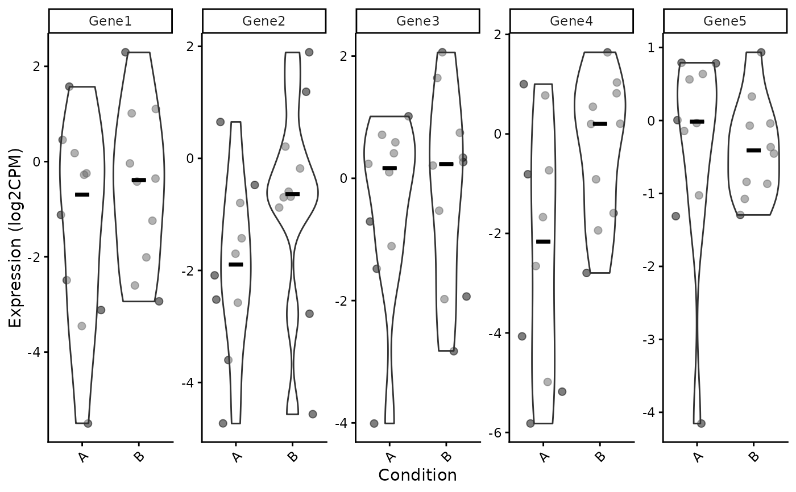
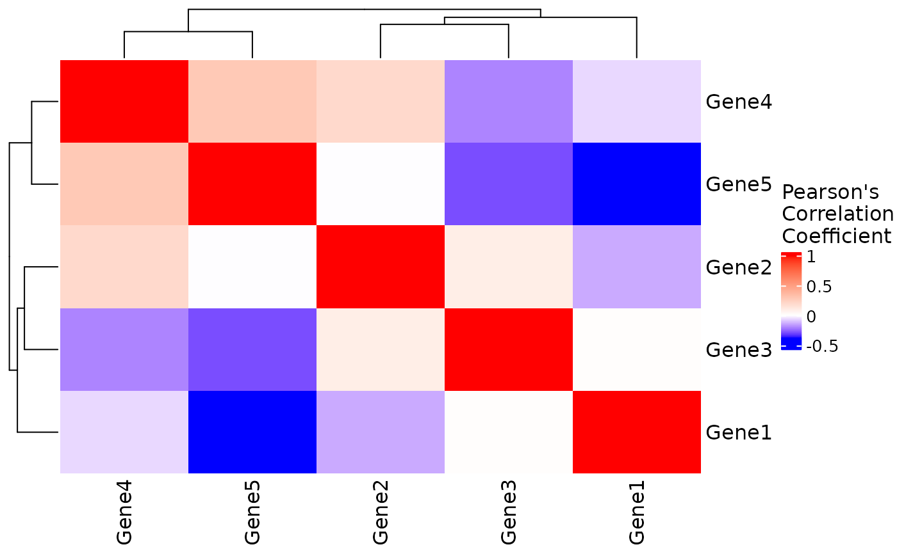
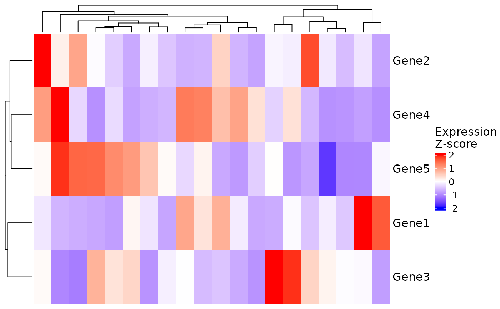
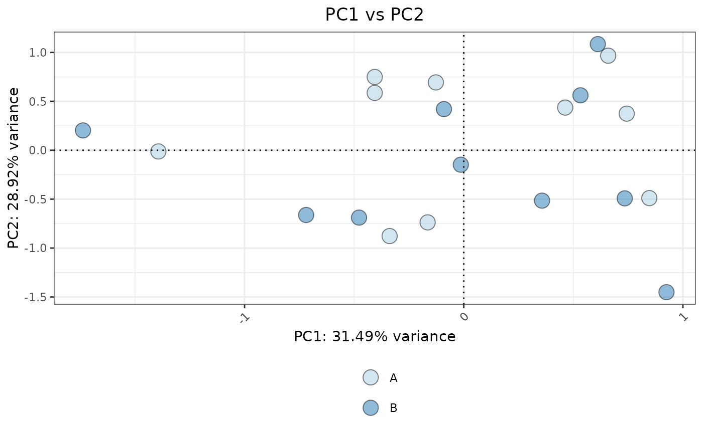
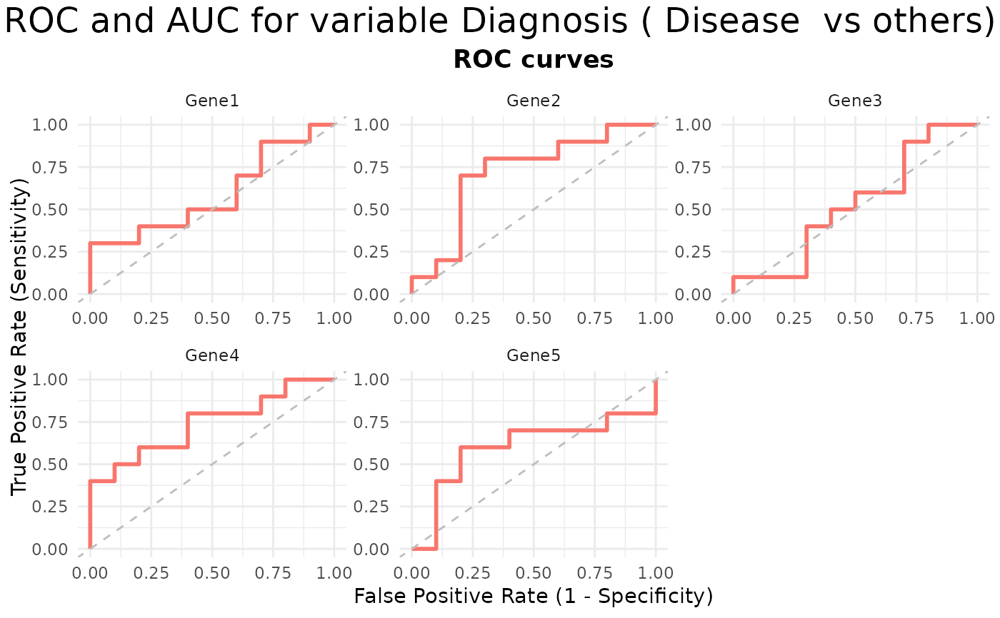
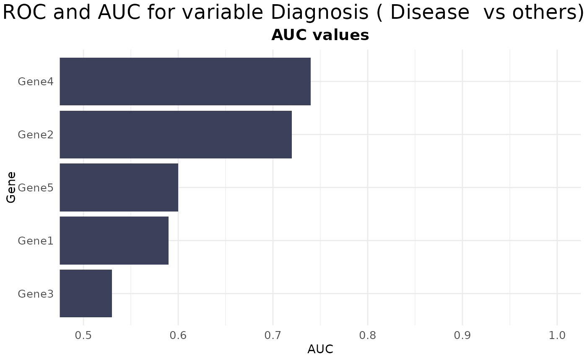
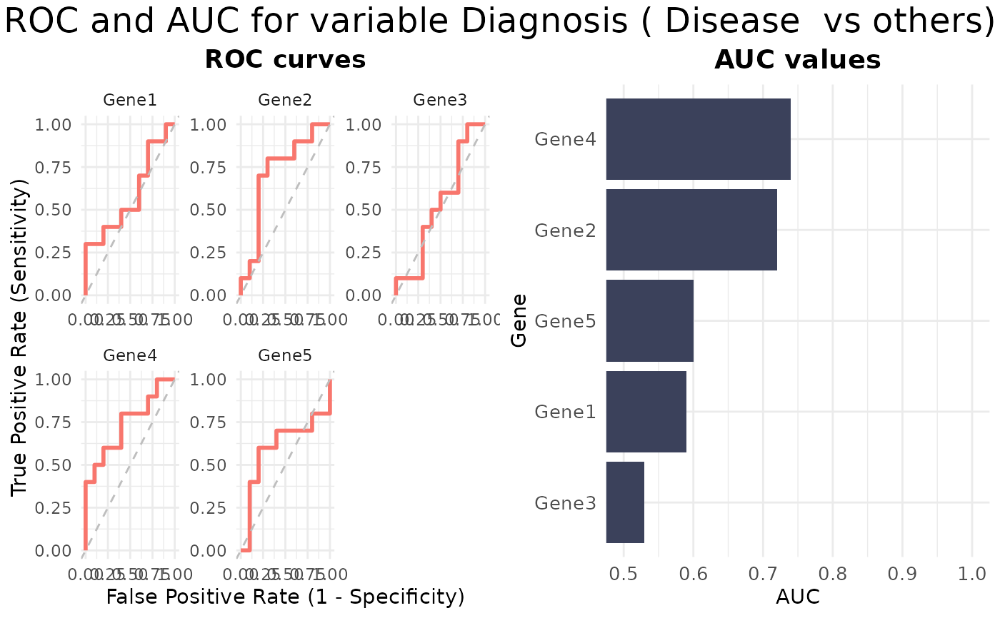
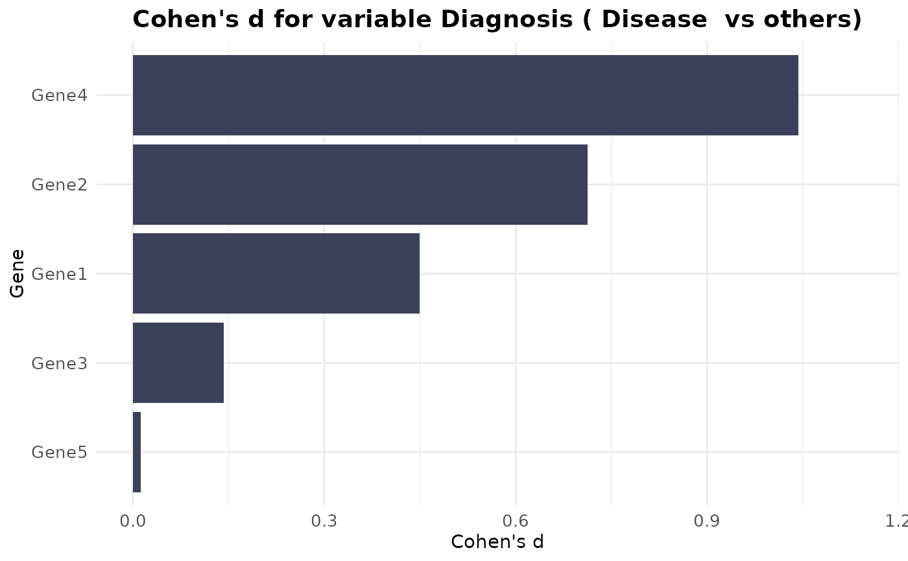

VisualiseIndividualGenes: Wrapper for Visualising Individual Genes in Gene Sets
Source:R/VisualiseIndividualGenes.R
VisualiseIndividualGenes.RdThis wrapper function helps explore individual gene behavior within a gene
set used in markeR.
It dispatches to specific visualisation functions based on plot_type,
supporting various plot types: heatmaps, violin plots, correlation analysis,
PCA, ROC/AUC, and effect size heatmaps.
Arguments
- type
Character. Specifies the type of plot to generate. Must be one of:
"violin": Violin plots of individual gene expression by group"correlation": Correlation heatmap of selected genes"expression": Expression heatmap of selected genes"roc": ROC plots for classification performance of individual genes"auc": AUC plots for classification performance of individual genes"rocauc": Combined ROC and AUC plots"cohend": Effect size (Cohen's D) heatmap"pca": PCA plot of selected genes
- data
Required. Expression data matrix or data frame, with samples as rows and genes as columns.
- genes
Required. Character vector of gene names to include in the visualisation.
- metadata
Optional. Data frame with sample metadata, required for some plot types (e.g., violin, roc, cohend).
- ...
Additional arguments passed to the specific plotting function.
Value
The output of the specific plotting function called, usually a ggplot or ComplexHeatmap object, often wrapped in a list with additional data.
Additional required arguments (passed via ...) per plot_type
- violin
Requires
GroupingVariable(column name inmetadatafor grouping).- roc, auc, rocauc
Requires
condition_var(metadata column with condition labels) andclass(positive class label).- cohend
Requires
condition_varandclass(same as roc).- correlation, expression, pca
No additional mandatory arguments required.
Examples
# Example data
set.seed(123)
expr_data <- matrix(rexp(1000, rate = 1), nrow = 50, ncol = 20)
rownames(expr_data) <- paste0("Gene", 1:50)
colnames(expr_data) <- paste0("Sample", 1:20)
sample_info <- data.frame(
SampleID = colnames(expr_data),
Condition = rep(c("A", "B"), each = 10),
Diagnosis = rep(c("Disease", "Control"), each = 10),
stringsAsFactors = FALSE
)
rownames(sample_info) <- sample_info$SampleID
selected_genes <- row.names(expr_data)[1:5]
# Violin plot
VisualiseIndividualGenes(
type = "violin",
data = expr_data,
metadata = sample_info,
genes = selected_genes,
GroupingVariable = "Condition",
nrow=1
)
#> Using gene as id variables

VisualiseIndividualGenes(
type = "correlation",
data = expr_data,
genes = selected_genes
)

# Expression heatmap
VisualiseIndividualGenes(
type = "expression",
data = expr_data,
genes = selected_genes
)

# PCA plot
VisualiseIndividualGenes(
type = "pca",
data = expr_data,
genes = selected_genes,
metadata = sample_info,
ColorVariable="Condition"
)

# ROC plot
VisualiseIndividualGenes(
type = "roc",
data = expr_data,
metadata = sample_info,
genes = selected_genes,
condition_var = "Diagnosis",
class = "Disease"
)

# AUC plot
VisualiseIndividualGenes(
type = "auc",
data = expr_data,
metadata = sample_info,
genes = selected_genes,
condition_var = "Diagnosis",
class = "Disease"
)

# ROC&AUC plot
VisualiseIndividualGenes(
type = "rocauc",
data = expr_data,
metadata = sample_info,
genes = selected_genes,
condition_var = "Diagnosis",
class = "Disease"
)

# Cohen's D plot
VisualiseIndividualGenes(
type = "cohend",
data = expr_data,
metadata = sample_info,
genes = selected_genes,
condition_var = "Diagnosis",
class = "Disease"
)
